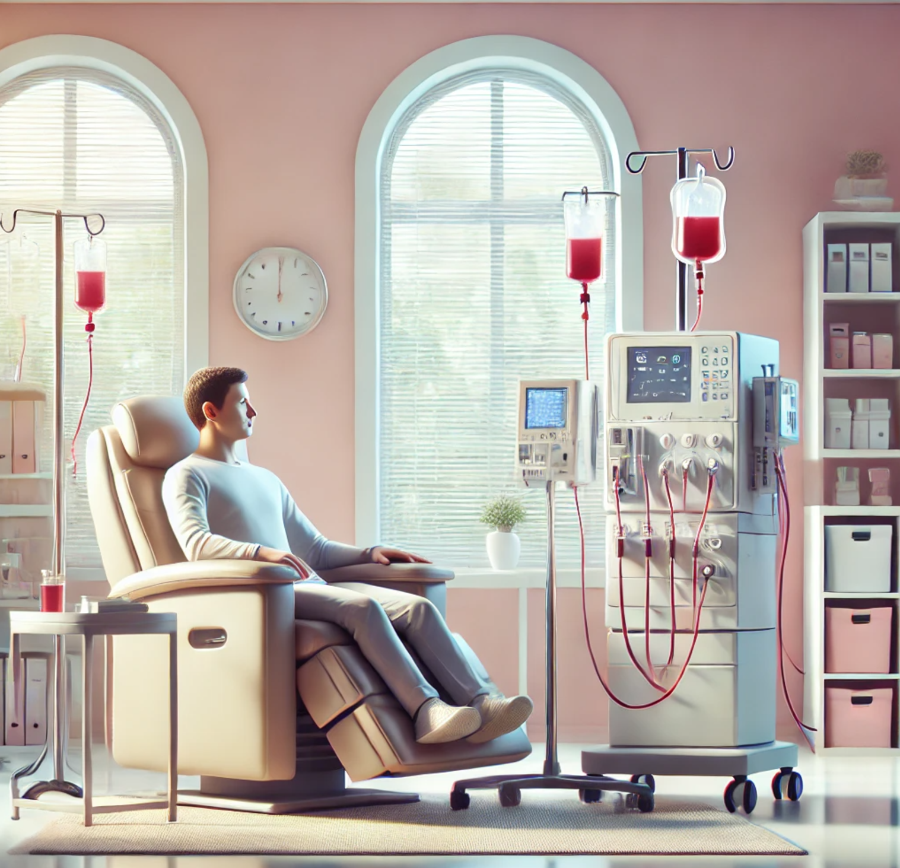

What is Kidney Disease?
Kidney disease, aka chronic kidney disease (CKD) or renal disease, is a health condition where the kidneys are damaged and can no longer filter blood effectively. This can lead to the accumulation of waste, fluids, and toxins in the body, causing serious health issues. It is often progressive and can result in kidney failure if not managed properly.
Types of Kidney Disease:
- Chronic Kidney Disease (CKD): A chronic condition where kidney function gradually declines over time. It may lead to kidney failure if untreated. CKD is common amongst patient's in the CNMI
- End-Stage Renal Disease (ESRD): This follows CKD, indicating a severe form of CKD where they kidneys have lost most of their function.
- Acute Kidney Injury (AKI): A sudden reduction in kidney function, often caused by injury, illness, or a medication reaction. This condition is reversible in some cases. If not managed properly, this can lead to CKD
- Diabetic Nephropathy: Kidney damage resulting from long-term diabetes.
- Hypertensive Nephropathy: Kidney damage resulting from consistently high blood pressure.
- Polycystic Kidney Disease (PKD): A genetic disorder that causes fluid-filled cysts to form in the kidneys, which can eventually impair kidney function.
- Glomerulonephritis: Inflammation of the kidney’s filtering units (glomeruli) due to infections, autoimmune diseases, or other conditions.
- Others: Kidney Stones (Nephrolithiasis), Pyelonephritis, Nephrotic Syndrome, IgA Nephropathy (Berger’s Disease), Lupus Nephritis, Alport Syndrome, Renal Artery Stenosis, Minimal Change Disease, Medullary Sponge Kidney, Fanconi Syndrome, and Tubulointerstitial Nephritis.
Symptoms of Kidney Disease
During the early stages of kidney disease, it may be asymptomatic. As the condition progresses, symptoms may include:
- Swelling in the ankles, legs, or feet (edema)
- Fatigue or weakness
- Difficulty sleeping
- Shortness of breath
- Loss of appetite
- Nausea or vomiting
- Urine changes (e.g., foamy urine, blood in urine, or urinating more or less than usual)
- High blood pressure
About Me
By: Patreisha Mae Concillado, SN
I am a 2nd year Nursing Student and for the past 3 semesters most of my patient cases involved one of three, but most of the time, it was the Disease Trio. The information provided is based on my personal experience and not that of a medical professional.